Kegiatan Bakti sosial RS Kasna Medika
Dipublikasikan pada 20 Oktober 2025
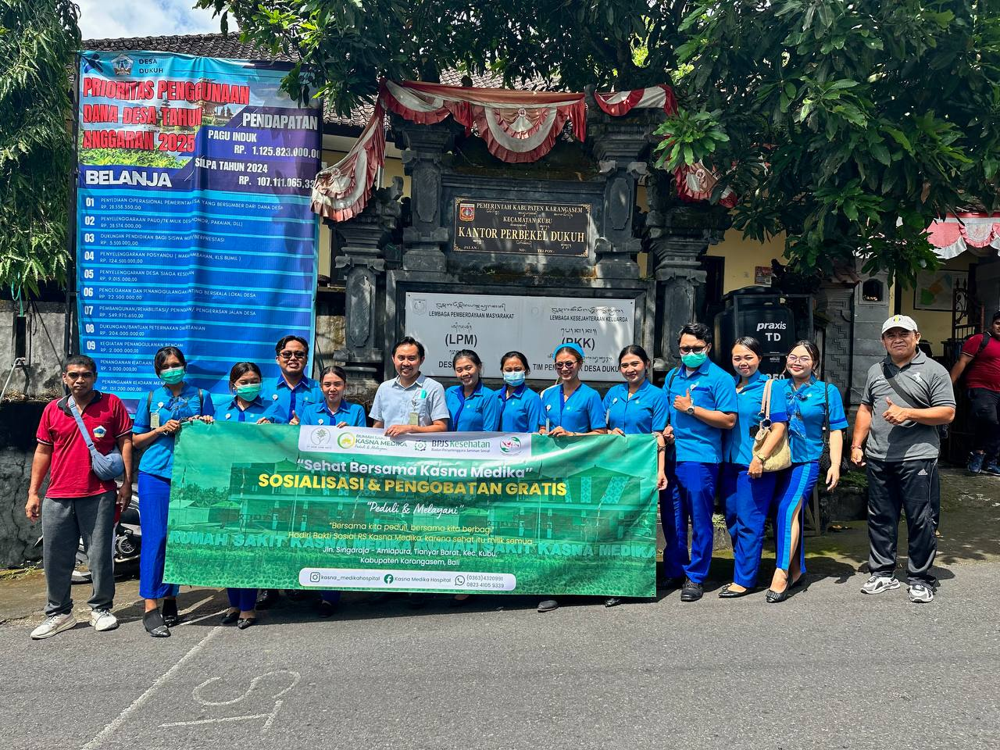 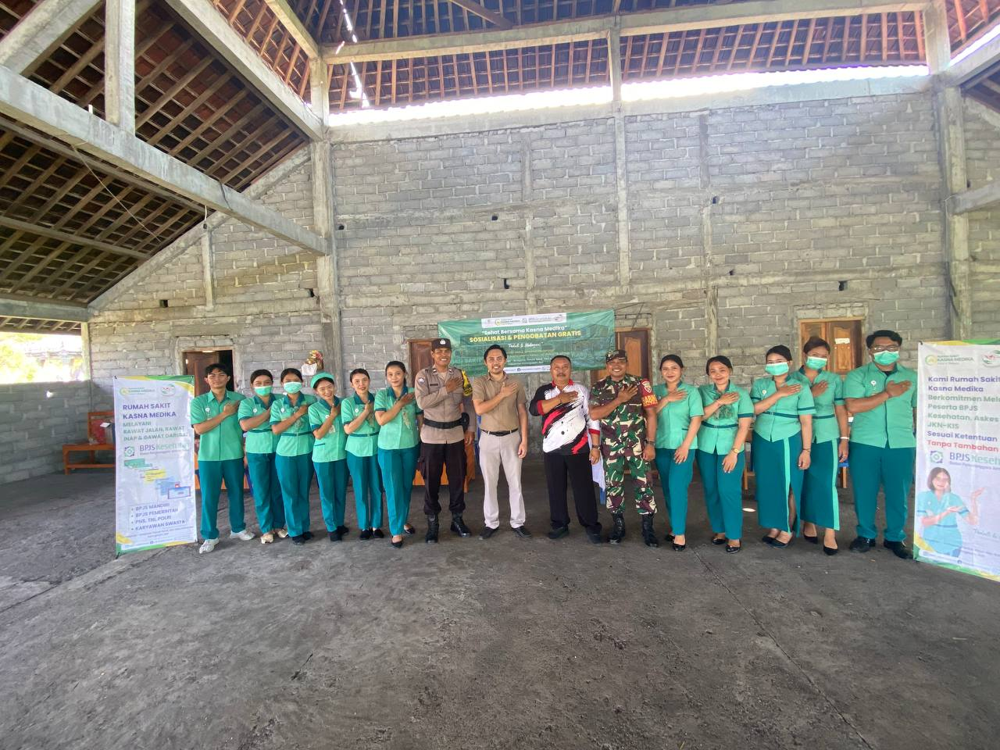 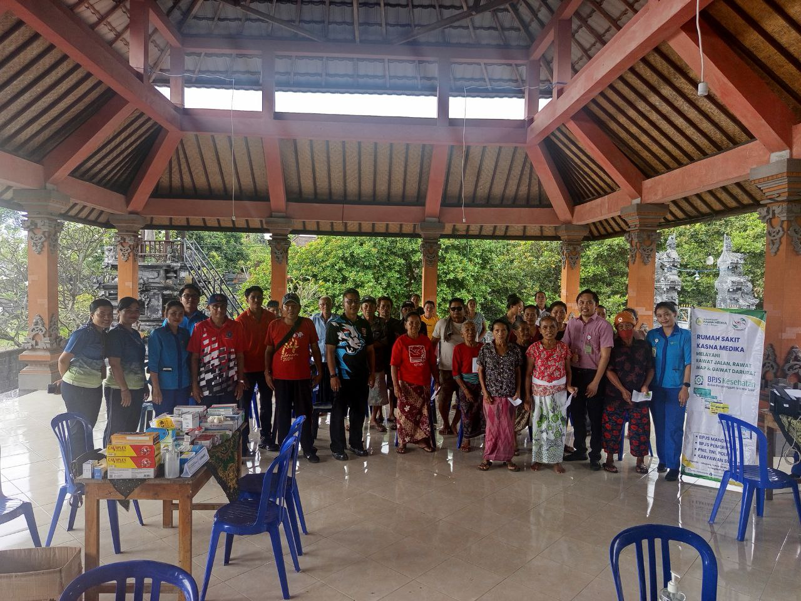 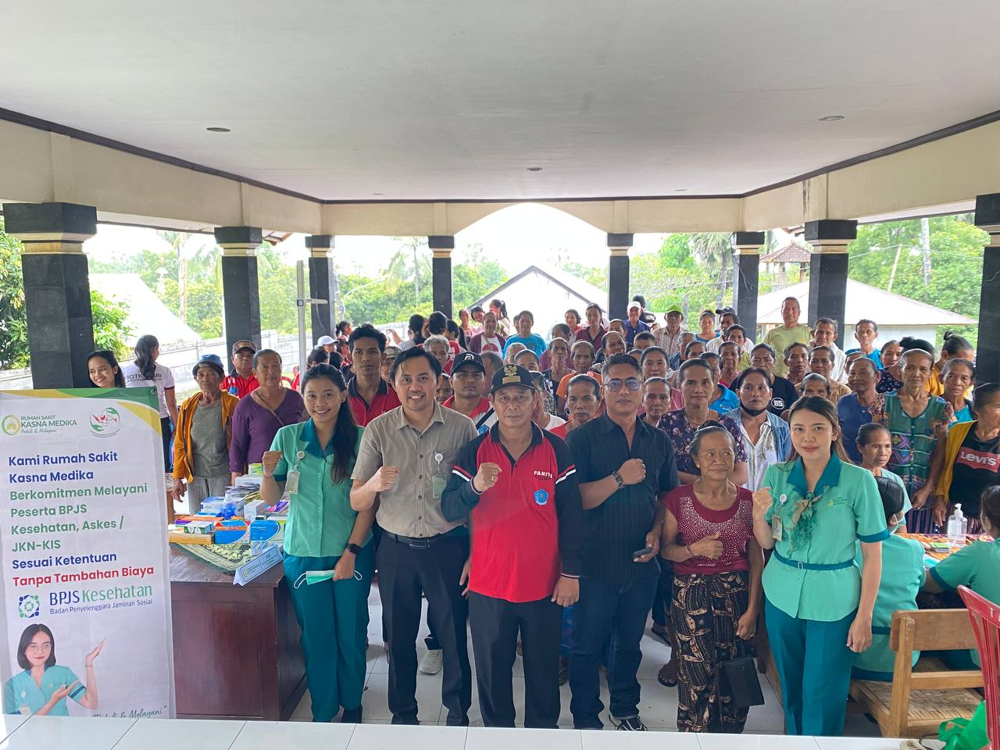 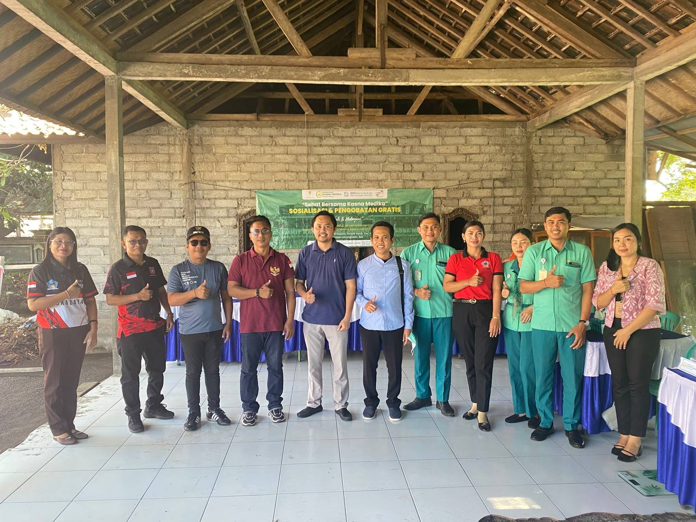 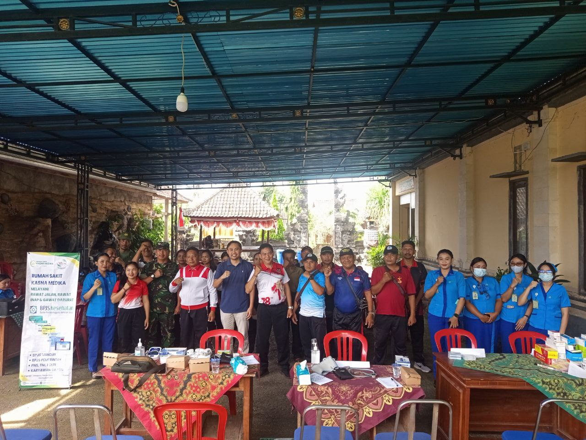 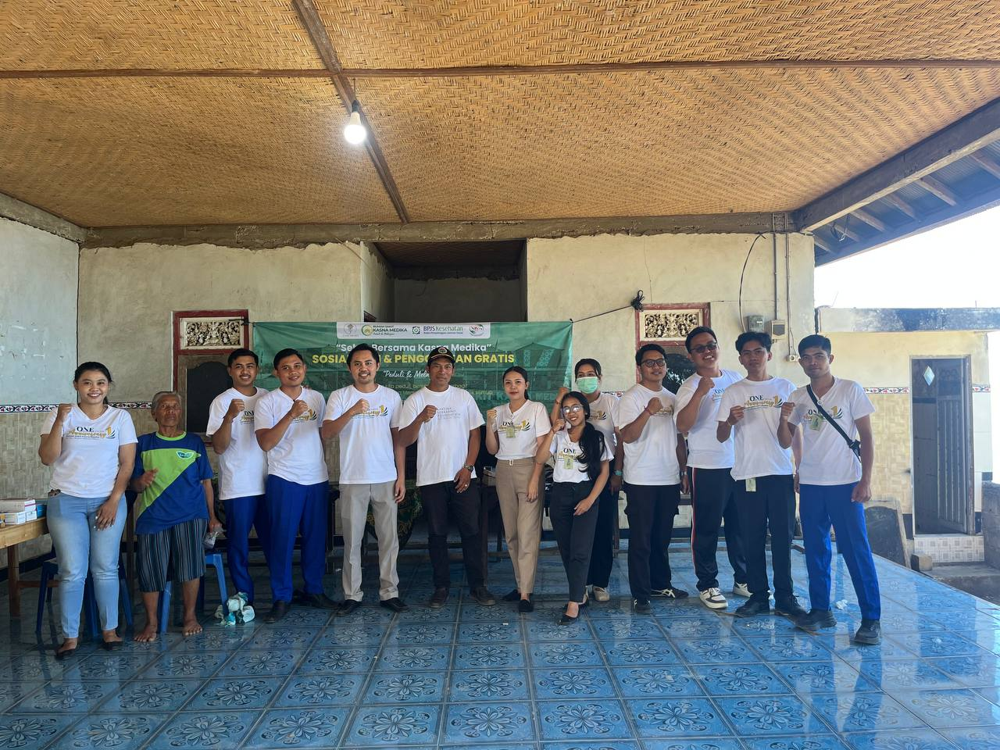 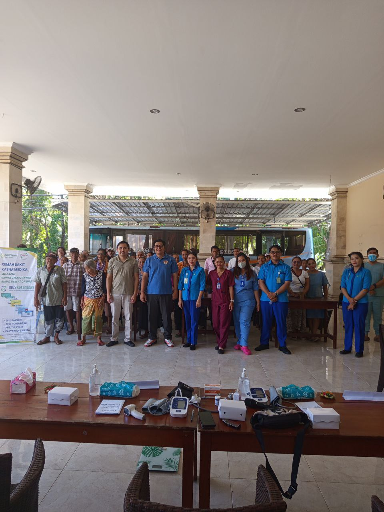 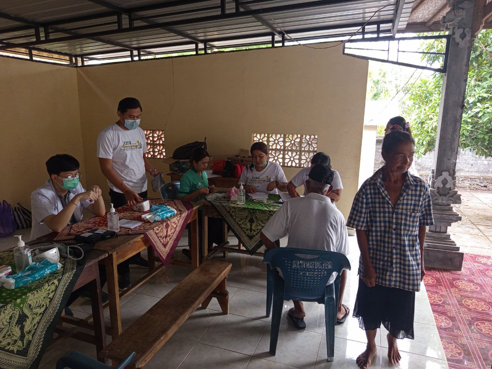 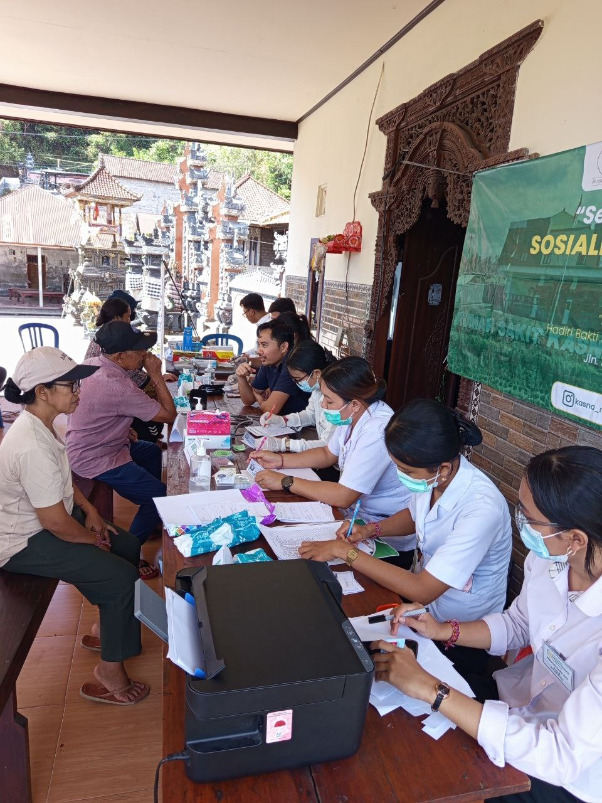 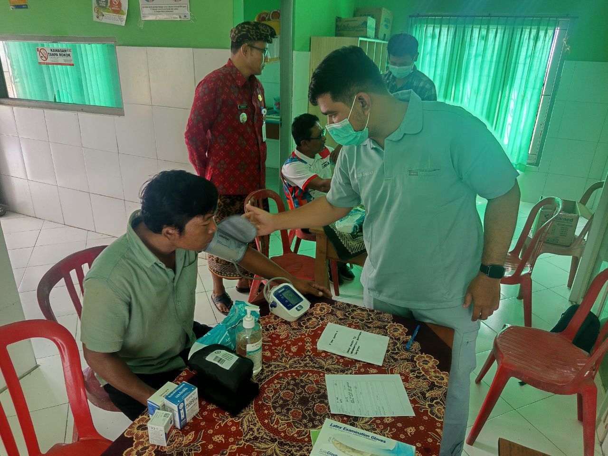Dalam upaya mewujudkan kepedulian terhadap masyarakat dan memperkuat peran rumah sakit dalam pelayanan sosial, RS Kasna Medika menggelar kegiatan Bakti Sosial yang berlangsung dengan penuh semangat dan kebersamaan.
Kegiatan ini diikuti oleh jajaran manajemen, tenaga medis, dan staf RS Kasna Medika yang turut berpartisipasi langsung dalam memberikan pelayanan kepada masyarakat. Berbagai kegiatan dilakukan, mulai dari pemeriksaan kesehatan gratis, pemberian obat-obatan, penyuluhan kesehatan, hingga donor darah.
Melalui bakti sosial ini, RS Kasna Medika ingin menghadirkan manfaat nyata bagi masyarakat, khususnya bagi mereka yang membutuhkan akses layanan kesehatan. Kegiatan ini juga menjadi bentuk komitmen rumah sakit untuk selalu hadir di tengah masyarakat, tidak hanya sebagai penyedia layanan medis, tetapi juga sebagai mitra dalam membangun kesadaran hidup sehat.
Direktur RS Kasna Medika menyampaikan bahwa kegiatan seperti ini akan terus dilaksanakan secara berkala sebagai wujud nyata kepedulian terhadap kesehatan masyarakat. “Kami berharap kegiatan bakti sosial ini dapat membantu masyarakat sekaligus mempererat hubungan antara rumah sakit dan warga sekitar,” ujarnya.
Suasana kegiatan berlangsung hangat dan penuh antusiasme. Masyarakat menyambut baik kegiatan ini dan berharap program serupa dapat terus berlanjut di masa mendatang.
Melalui kegiatan bakti sosial ini, RS Kasna Medika menegaskan komitmennya untuk tidak hanya memberikan pelayanan kesehatan di dalam rumah sakit, tetapi juga turun langsung ke masyarakat demi mewujudkan kehidupan yang lebih sehat dan sejahtera.
⬅ Kembali